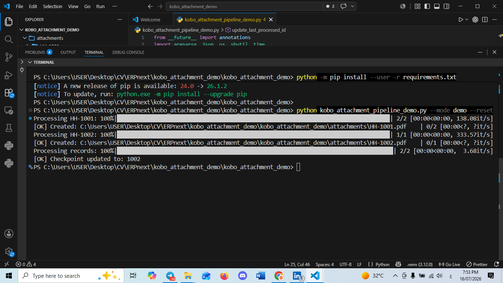
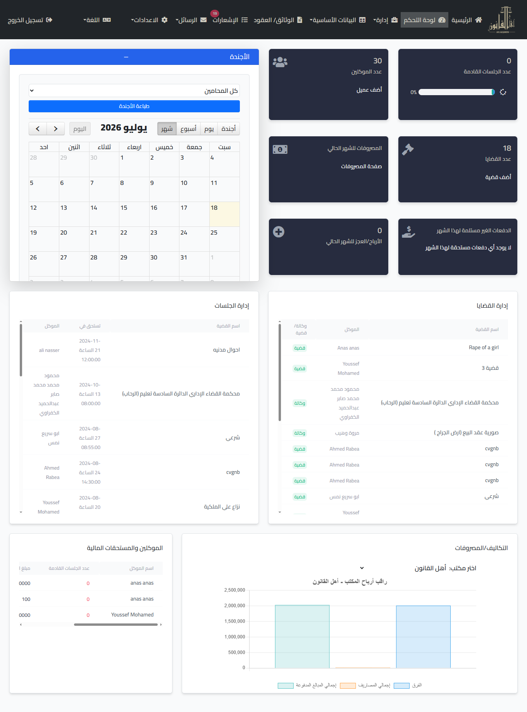
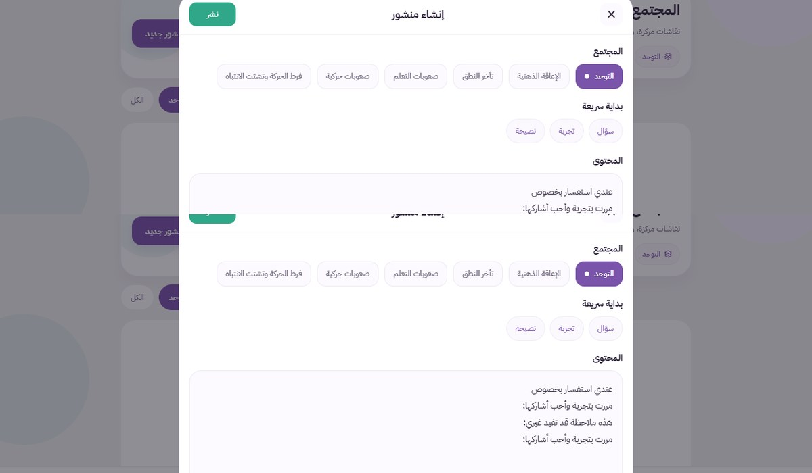
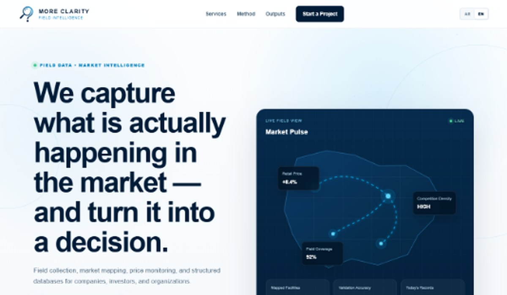

Operational information systems
Custom workflows, data models, permissions, validation, reporting and handover—built for actual users and constraints.
- ERPNext / Frappe
- FastAPI / SQL
- Local-first deployment
01Information Systems & Data Operations
I map the real workflow, engineer the system behind it, automate the repetitive work, and make the resulting data useful for decisions.

Technical depth with operational ownership—from discovery and data modelling to deployment, training and improvement.
02What I solve
I work where software, field reality and management information meet. The result is not another tool—it is a clearer way to operate.
Custom workflows, data models, permissions, validation, reporting and handover—built for actual users and constraints.
Collection tools, team readiness, data quality controls, cleaning, monitoring and delivery for field programmes and research operations.
Reliable pipelines for synchronisation, documents, alerts and reporting that remove repetitive work and expose useful signals.
Survey and tool design, team preparation, fieldwork coordination, data quality, cleaning, reporting and delivery.
03Selected case studies
A central system covering children, households, assessments, plans, interventions, visits, referrals, documents, access control, dashboards and reporting.

Incremental sync, attachment organisation, structured PDFs, change tracking, validation audits and reporting alerts.
View case
A purpose-built RTL platform for cases, sessions, documents, tasks, communications, payments, expenses and permissions.
View case04Founder, product & commercial initiatives
These initiatives show how I explore user needs, structure information, build functional prototypes, integrate AI, and translate operational experience into practical service offers—without presenting experiments as proven market success.
 Functional prototype
Functional prototype
An AI-assisted community service directory combining structured provider data, location-based discovery, professional provider profiles, analytics, and Telegram access.
View product
Functional prototype · Pre-validationA personalized support platform for families of children with developmental and learning challenges, combining onboarding, structured communities, AI-assisted guidance, educational content, and course workflows.
View prototype
Commercial initiative · Proposal stageA focused service initiative for field data collection, facility databases, market mapping, price intelligence, surveys, quality control, and decision-ready outputs.
View service initiative05Working method
The highest-leverage technical decision is usually made before implementation begins: defining the real problem, ownership and information flow.
Users, decisions, records, failures and constraints.
Data model, permissions, validation and outputs.
Implementation, migration, deployment, training and documentation.
Use real errors and reporting needs to refine the system.
06About Anas
My value is not tied to a single framework. It is the ability to understand how teams really work, translate that into a usable system, and stay accountable for data quality, adoption and reporting.
My background combines information systems development, data operations, humanitarian information management, field implementation, and project delivery. That combination lets me work credibly with both leadership and the people using the system every day.
07Start with the problem
Send me the current process, who uses it, and what must improve. I will help identify the most practical first move.